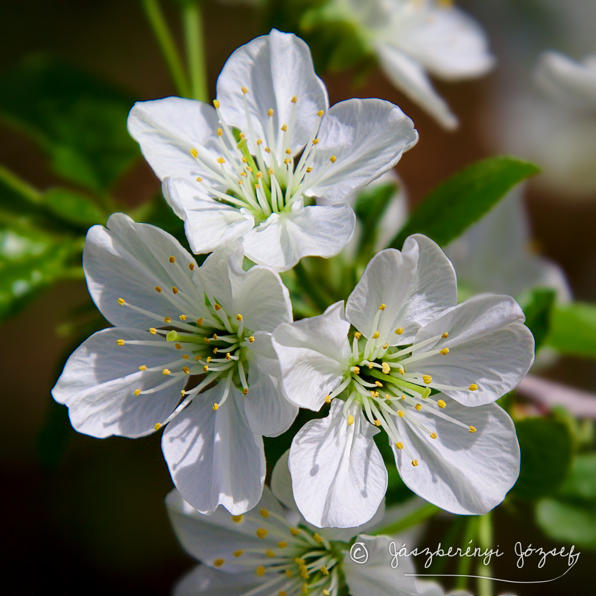
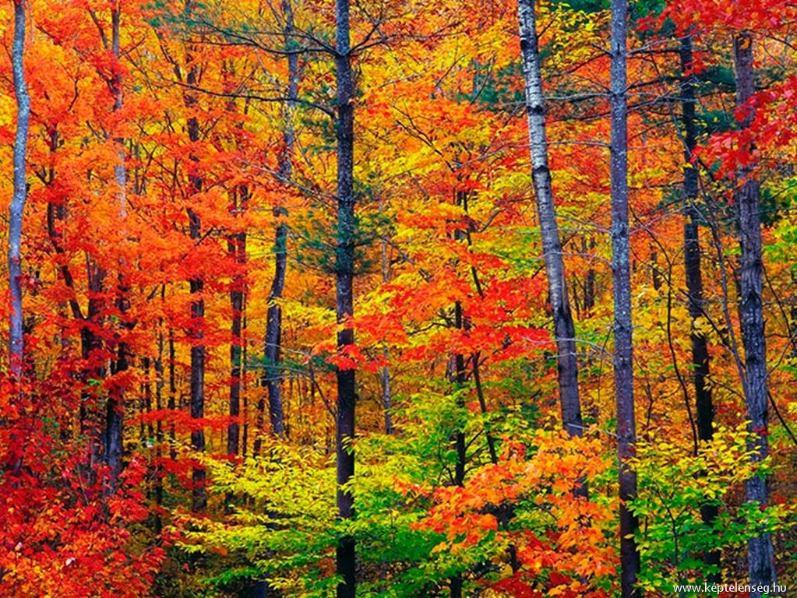
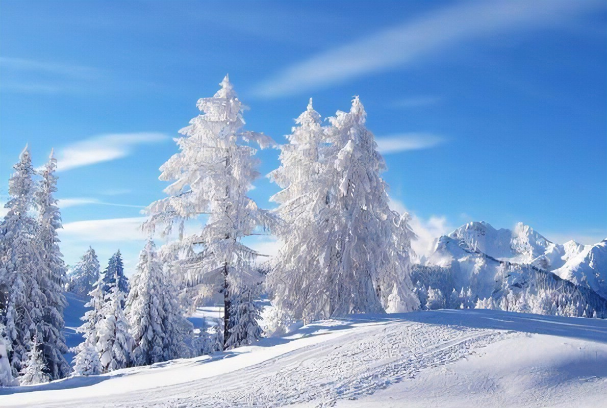

Az évszakok kialakulása a Föld Nap körüli mozgásának, valamint a tengelyferdeségnek következménye. A tengelyferdeség[1] miatt a napsugarak beesési szöge a keringés során változik, emiatt a Földön felmelegedésbeli különbségek alakulnak ki.
Évszakok neve |
Évszakkép |
Vers az évszakról |
Tulajdonság |
Szín |
Tavasz |
 | Cseppen a jégcsap, olvad a hó. Csupasár dombon nincs takaró. Hófehér csokrok bújnak elő, Belezendül a vén tölgyerdő. | felélénkül az élet, virágba borulnak a növények, kizöldellnek az erdők | |
Nyár |
Láttam a napot, súgta a szélnek: Várnak a tavak, csónakok, stégek. És tényleg a táblán virul egy szó, Csupaszín betűkkel: VAKÁCIÓ! | forró időjárás,hosszabb napok,kevés csapadék | ||
Ősz |
 | Félig vízben, félig a parton fekszem az őszi ég alatt; egyszerre ringat és melenget a tenger és a déli nap | Hideg,sok eső,változó éghajlat | |
Tél |
 | Hófehér a város, Lehullott a hó, Jégcsap csüng az ágon, Befagyott a tó. | Hideg,hull a hó,minúsz fokok |